MiBolsillo
Manual de usuario
Versión 3.0 · Octubre de 2026
Finanzas personales y de tus negocios (Airbnb, freelance, conductor) en un solo lugar.
Las capturas usan datos de demostración, no información real.
1. Entrar a la aplicación
Necesitas un navegador (Chrome, Edge, Safari o Firefox). Abre la dirección de la aplicación y elige una de las dos formas de entrar:
- Continuar con Google, si tienes cuenta de Google.
- Usuario y contraseña, si el administrador te creó un acceso de solo lectura.
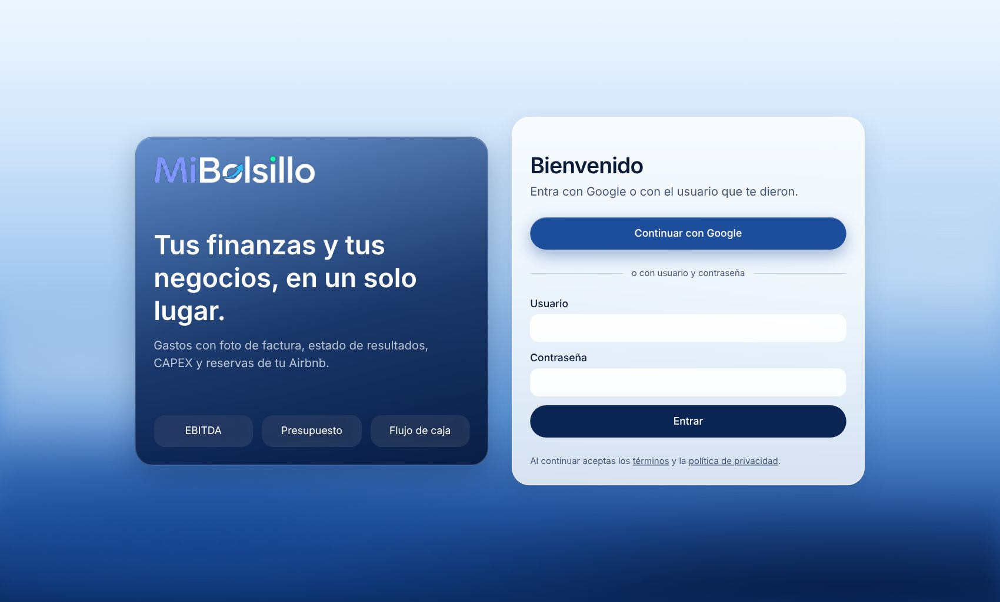
La primera vez con Google, crea tu negocio: escribe un nombre, elige el tipo y, si es Airbnb, el nombre del apartamento. La app crea categorías y una cuenta «Efectivo» listas para usar.
2. Cómo moverte
En el computador verás un menú lateral con iconos; al acercar el cursor se despliega con los nombres. Arriba están el selector de negocio, el botón + Movimiento, la campana de pendientes y tu avatar (tema claro/oscuro, mi cuenta y cerrar sesión). En el celular hay una barra inferior con el botón +.
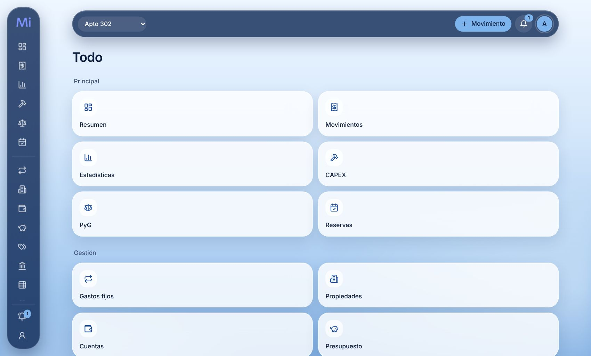
3. Roles y permisos
| Rol | Qué puede hacer |
|---|---|
| Administrador | Todo: resumen, PyG, presupuesto, cuentas, reservas, deuda, carga en lote y miembros. |
| Operador | Registrar gastos, insumos y facturas de aseo y marcar compras CAPEX. No ve ingresos, EBITDA ni PyG, y solo ve lo que él registró. Puede editar o borrar sus gastos durante 48 horas. |
| Solo lectura | Ve el resumen, movimientos, CAPEX, reservas, PyG, estadísticas y deuda, pero no puede agregar, editar ni borrar nada. |
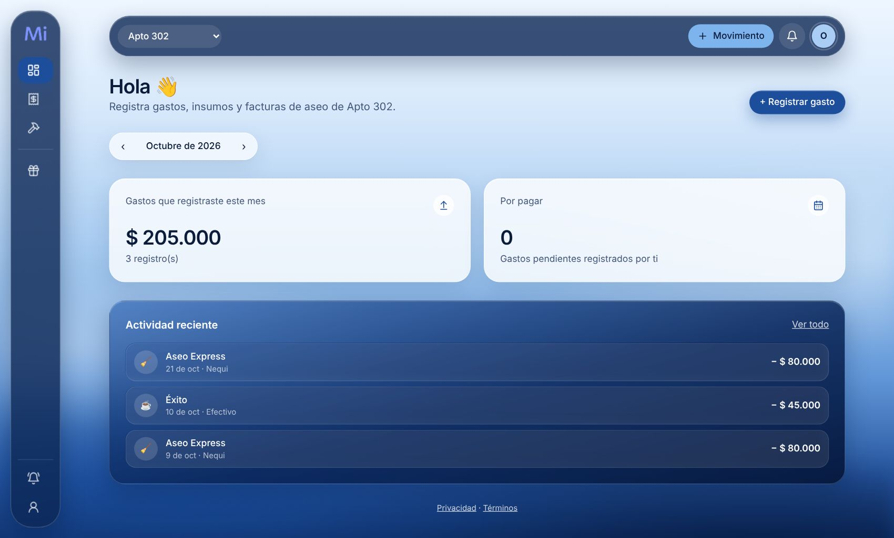
4. Resumen
Es la pantalla principal del administrador. Usa las flechas para cambiar de mes y el selector Pagado / Por pagar / Todo para ver lo ya movido, lo pendiente o ambos.
- Saldo total en cuentas y los botones rápidos Gasto, Ingreso y Transferir.
- Flujo de caja: ingresos menos gastos del filtro.
- Margen de contribución y EBITDA operativo (las compras CAPEX no entran).
- Ejecución del presupuesto del mes.
- En Airbnb: ocupación, tarifa media por noche (ADR) y RevPAR.
- Principales gastos, últimos 6 meses, cuentas por pagar, próximas llegadas y actividad reciente.
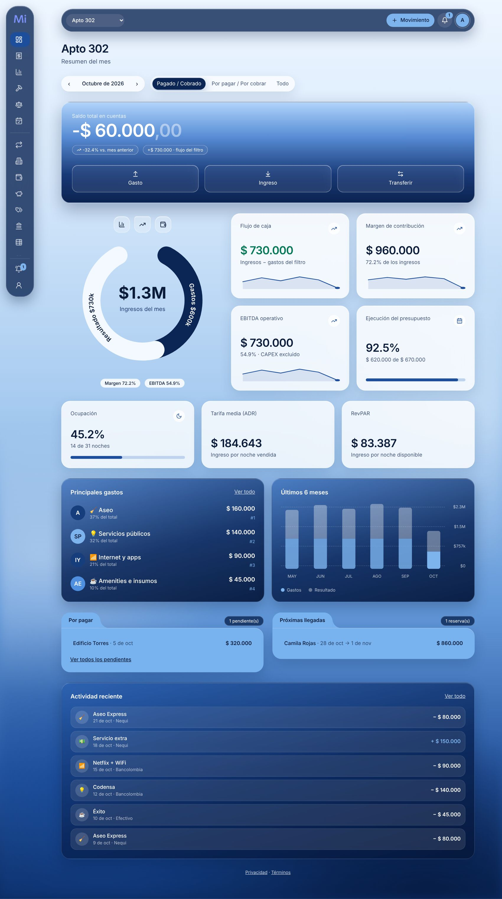
5. Registrar un gasto o ingreso
- Pulsa + Movimiento (o Gasto en el resumen).
- Si tienes la factura, arrástrala o pulsa Elegir archivo (JPG, PNG, WebP o PDF de hasta 8 MB). En el celular puedes tomar la foto.
- La app lee el comprobante y sugiere monto, fecha, proveedor y categoría.
- Revisa los datos, elige cuenta y estado (Pagado o Por pagar) y pulsa Guardar. Si compraste varias unidades, escribe la Cantidad (opcional): el monto sigue siendo el total y en el detalle verás el valor por unidad.
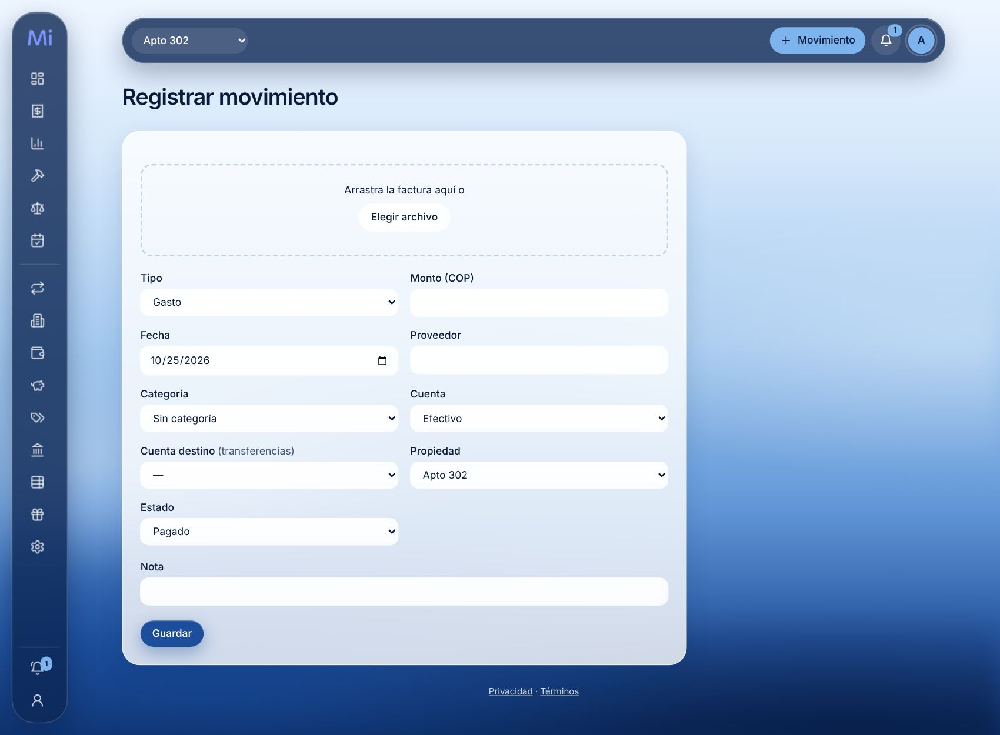
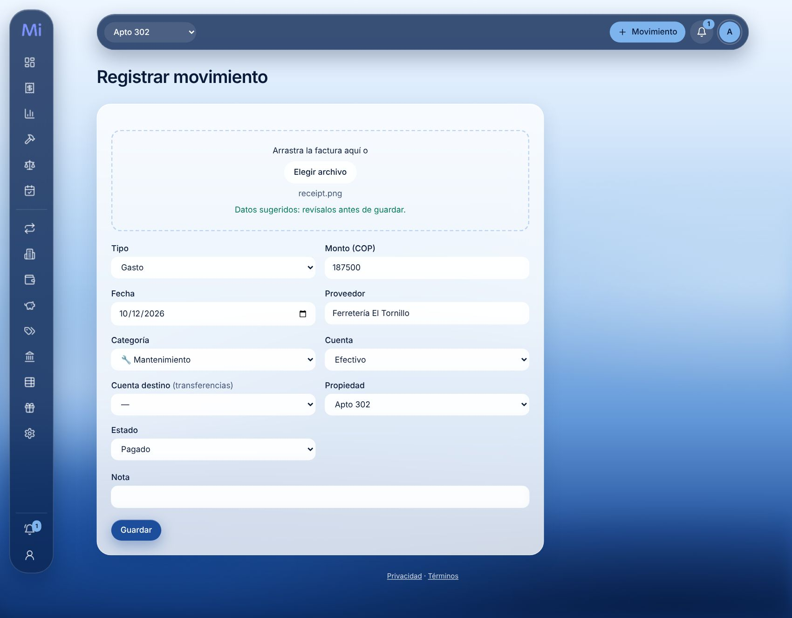
Para una transferencia entre cuentas, elige el tipo «Transferencia» e indica la cuenta destino.
6. Movimientos
Lista de todo lo registrado. Busca por proveedor o nota, filtra por categoría, cuenta, estado y tipo, y pasa de página. Exportar CSV descarga la lista filtrada.
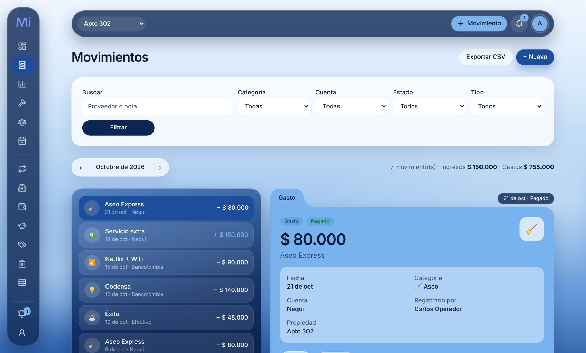
Toca un movimiento para ver el detalle, abrir su comprobante, editarlo o eliminarlo.
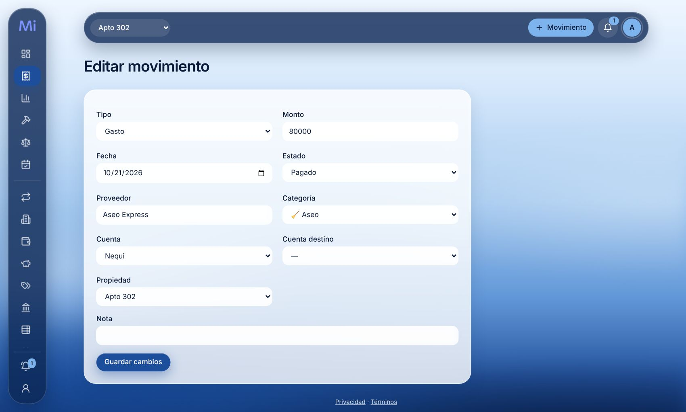
7. Pendientes
La campana muestra lo que debes pagar (los vencidos van marcados) y lo que te deben. Márcalos como pagados o cobrados desde ahí.
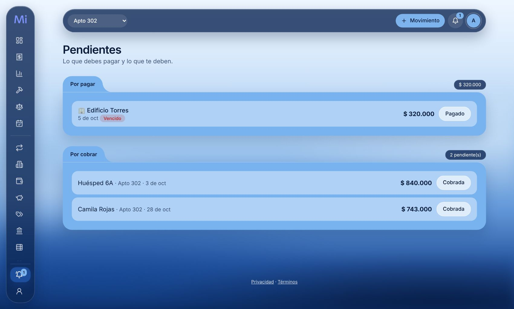
8. CAPEX (compras de adecuación)
Lista de lo que compras para dejar listo el apartamento. Escribe el precio real y pulsa Comprado ✓. La variación (presupuestado − real) se calcula sola: verde es ahorro, rojo es sobrecosto. Deshacer revierte la compra.
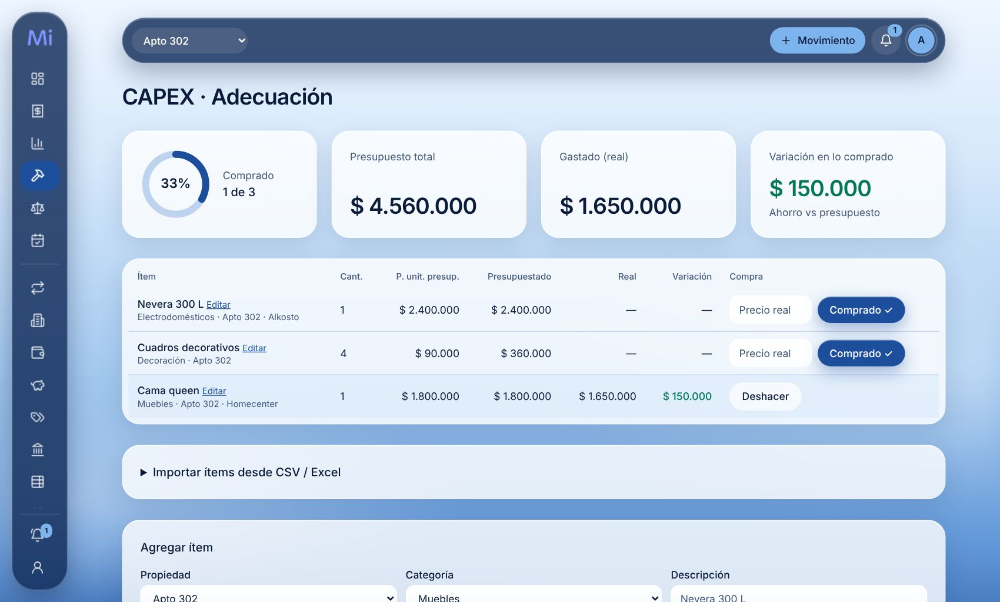
9. Reservas
Registra entrada, salida, ingreso, tarifa de aseo y comisión del canal (Airbnb, Booking…). Marca Cobrada cuando llegue el pago. El detalle muestra el neto que realmente te queda.
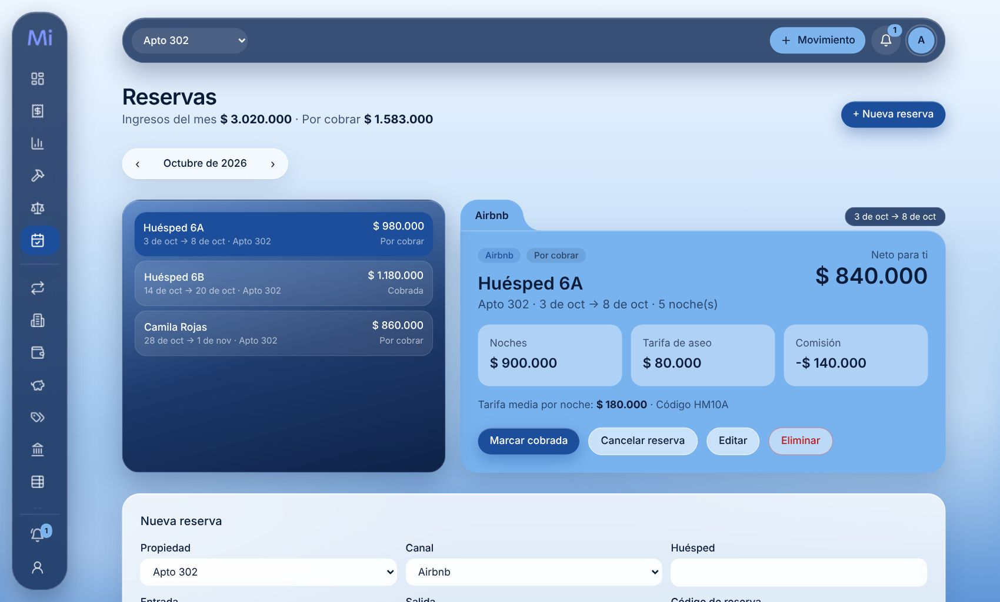
10. Gastos fijos
Crea una vez administración, servicios y suscripciones. Cada mes pulsa Generar gastos del mes para crearlos como «Por pagar» y luego márcalos como pagados.
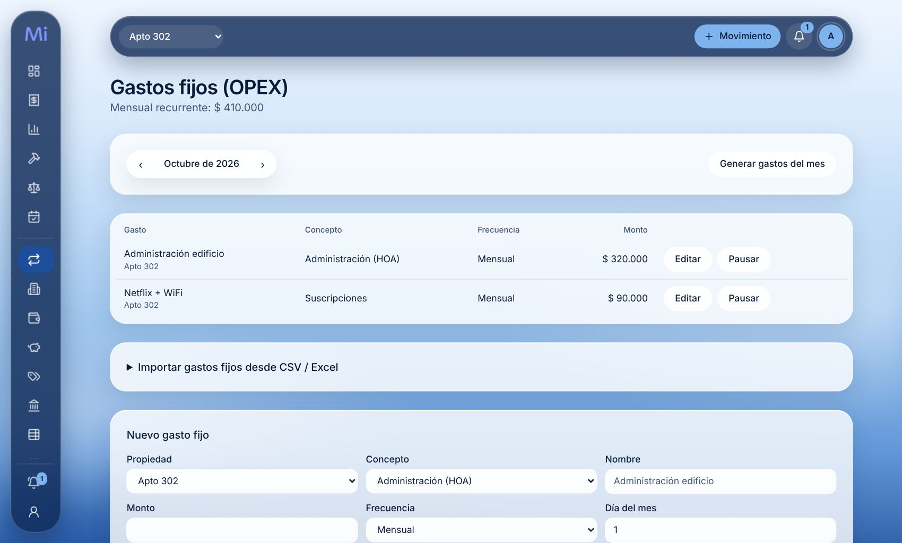
11. Estado de resultados (PyG)
Ingresos brutos → costos variables (comisiones, aseo, insumos) → margen de contribución → gastos fijos → EBITDA operativo. La «línea del PyG» de cada categoría decide dónde suma.
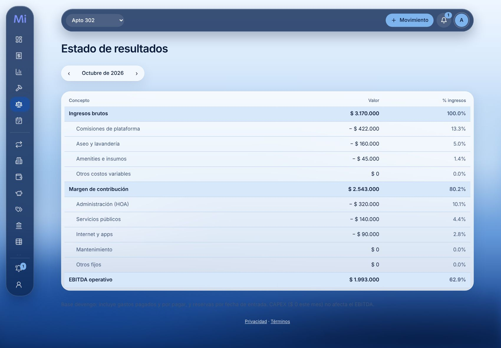
12. Estadísticas
Elige Hoy, Semana, Mes o Año; compara con el periodo anterior y mira los gastos por categoría y los mayores proveedores.
Filtro de categorías: pulsa Categorías y marca las que quieres ver. Las que desmarques (por ejemplo gastos personales o de un familiar) no cuentan en ninguna cifra, gráfica ni lista de proveedores. Hay atajos Todas, Ninguna e Invertir, y puedes recordar la selección en el navegador. Las reservas siempre se incluyen.
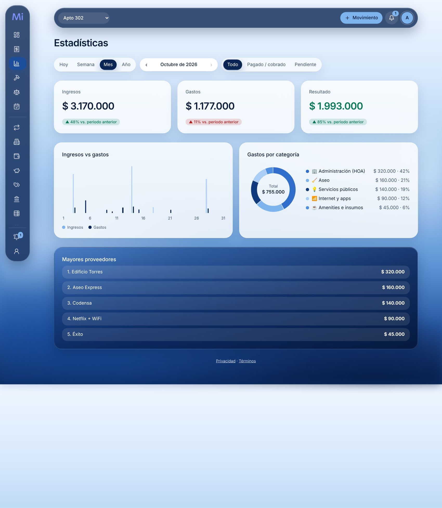
13. Cuentas, tarjetas y créditos
Todo el dinero y las deudas viven en un solo módulo: Más → Cuentas y deudas. Arriba ves cuatro cifras: Dinero en cuentas, Deuda en tarjetas, Saldo de créditos y Posición neta (dinero menos deudas). Debajo hay tres pestañas. Solo el administrador puede editar; el rol de solo lectura lo ve todo.
Cuentas
Efectivo, bancos y billeteras con su saldo. Edita nombre, tipo y saldo inicial, o archiva una cuenta.
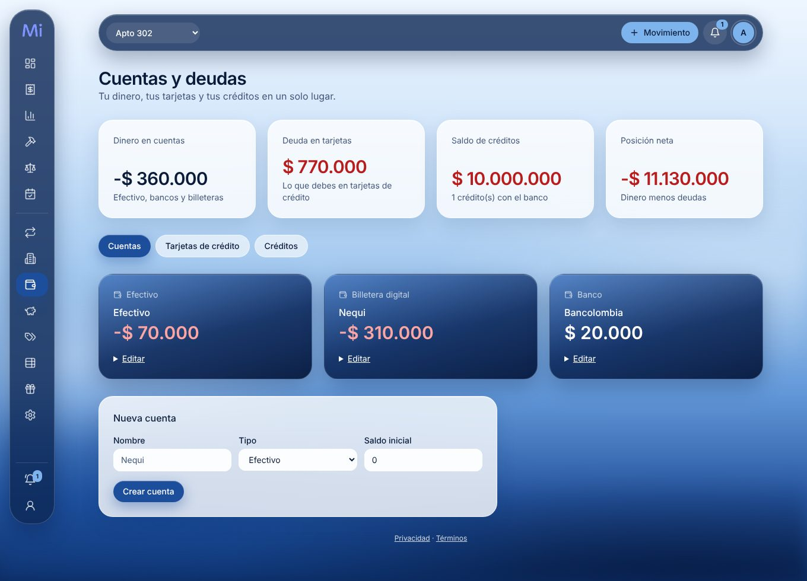
Tarjetas de crédito
Cada tarjeta muestra la deuda, el cupo disponible y el porcentaje usado, el próximo corte, la fecha límite de pago (con los días que faltan), las compras desde el último corte, los cargos mensuales y los intereses estimados de un mes si no pagas.
- Crear la tarjeta: nombre, cupo total, deuda actual, día de corte, día límite de pago, tasa, cuota de manejo y seguro mensuales.
- Registrar compras: en un movimiento nuevo, elige la tarjeta como cuenta. La deuda sube.
- Pagar la tarjeta: elige desde qué cuenta pagas y el valor. Se registra como transferencia: baja la deuda y baja esa cuenta.
- Cargar cuota de manejo, seguro e intereses: elige el mes y, si quieres, los intereses del extracto. Se suman a la deuda como gastos financieros (no entran al EBITDA) y no se duplican si repites el mes.
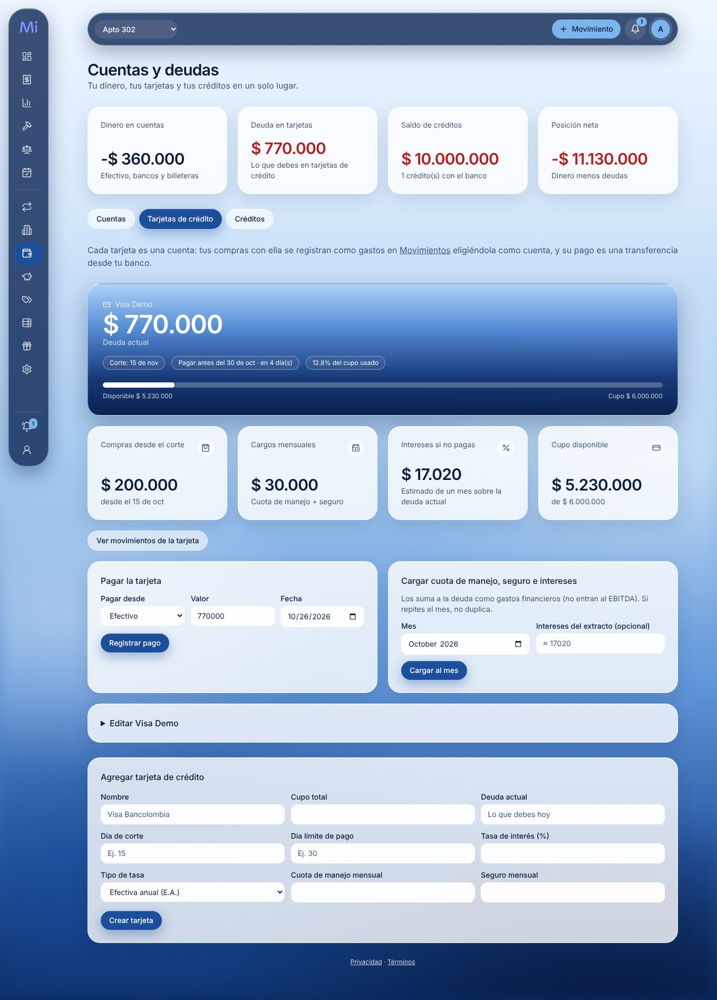
Créditos
Seguimiento de un crédito con el banco. Créalo con monto, banco, tasa (E.A. o mensual), plazo en meses, fecha de la primera cuota, la cuota que cobra el banco (si la tienes), el seguro mensual y la cuota de manejo.
- Saldo pendiente, % de capital pagado, cuota actual y aviso de cuotas atrasadas.
- Próxima cuota, intereses pagados vs. previstos, total pagado y fecha estimada de fin (se recalcula con abonos extra).
- Plan de pagos: gráfica de capital e intereses por cuota y tabla de amortización.
- Seguro y cuota de manejo: en «Editar los datos del crédito» escribe el seguro mensual que cobra el banco y la cuota de manejo mensual (tarjetas de crédito). No amortizan la deuda: se suman a cada cuota y la pantalla muestra la cuota total y lo pagado y pendiente por estos cargos. Para una tarjeta, crea un crédito con su deuda, tasa y plazo y llena estos campos. Al registrar una cuota, el valor incluido queda guardado en ese pago, así que cambiarlo después no altera los pagos anteriores.
- Pagos: registra cada cuota o un abono extra a capital. Si no escribes los intereses del extracto, se calculan.
- Destino del crédito: a dónde fue el dinero y su porcentaje; avisa si la suma supera el monto o queda algo sin asignar.
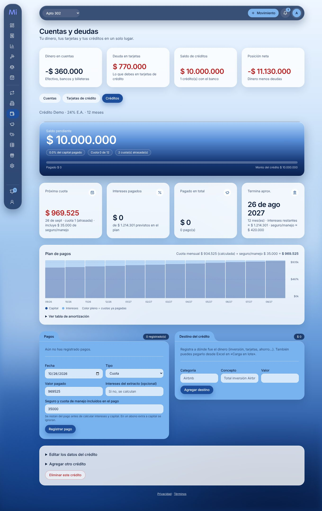
14. Carga en lote (editor tipo tabla)
Solo administradores. Sirve para meter muchos datos de una vez. Elige qué cargar: Movimientos, CAPEX, Gastos fijos o Destino del crédito.
- Pegar desde Excel o Google Sheets: copia las celdas, haz clic en cualquier celda de la tabla y pega con
Ctrl+V. En el celular usa «Pegar texto copiado de Excel». - Subir un .xlsx o .csv: la app detecta la hoja y las columnas por sus encabezados. Nada se guarda todavía.
- Editar como en una hoja:
Enterbaja a la celda de abajo; × quita la fila. - Pulsa Revisar para validar sin guardar: las filas con problema se marcan en rojo con el motivo.
- Pulsa Guardar. Es todo o nada: si una fila falla, no se guarda ninguna.
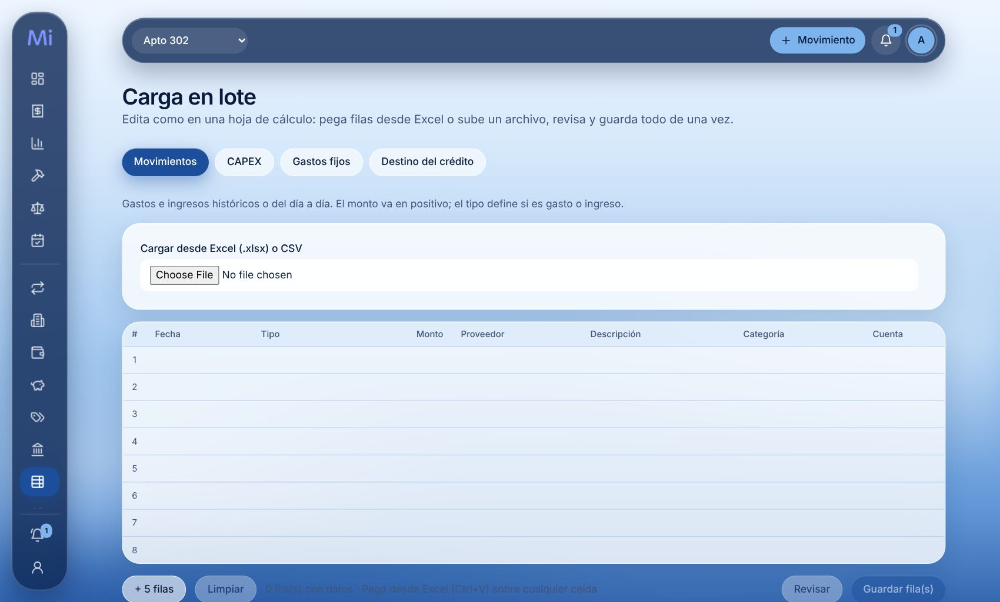
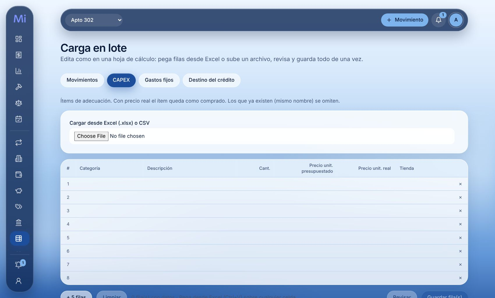
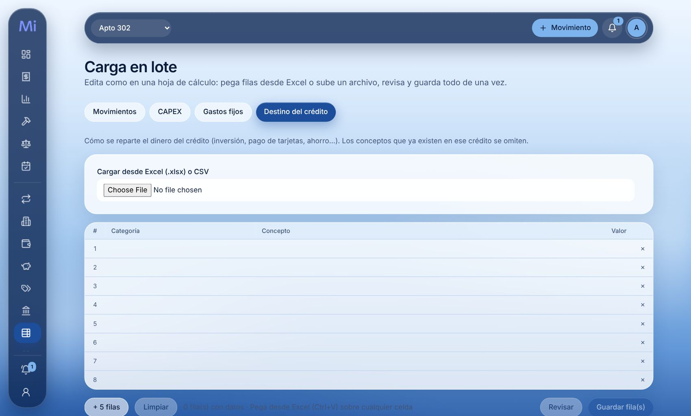
15. Presupuesto, categorías y propiedades
Presupuesto
Fija cuánto quieres gastar por categoría cada mes. El botón de copiar trae el presupuesto del mes anterior.
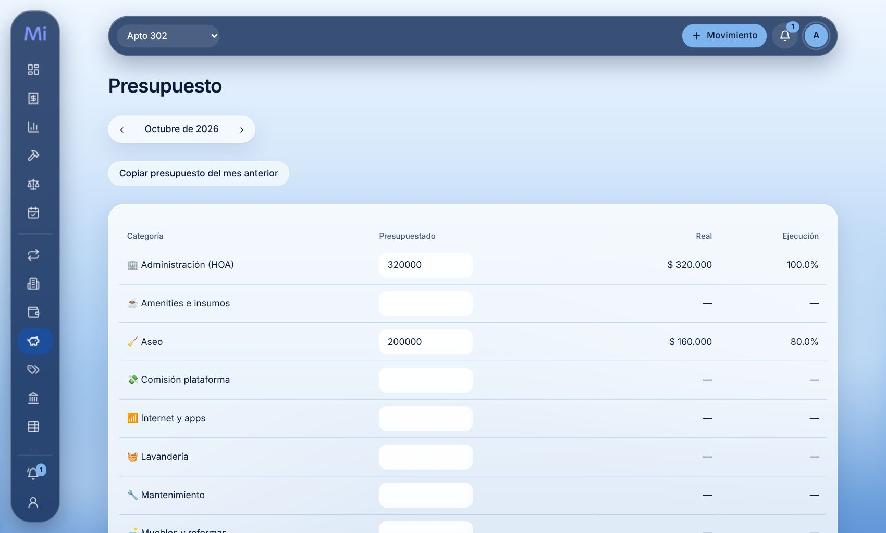
Categorías
Crea y edita categorías; la «línea del PyG» decide en qué parte del estado de resultados suman.
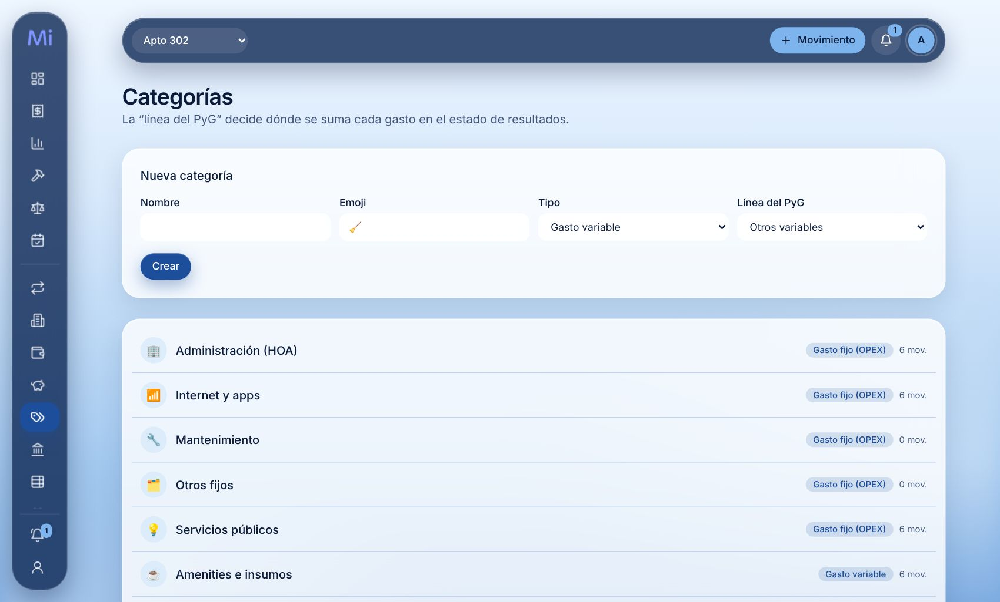
Propiedades
En negocios Airbnb, administra tus apartamentos.
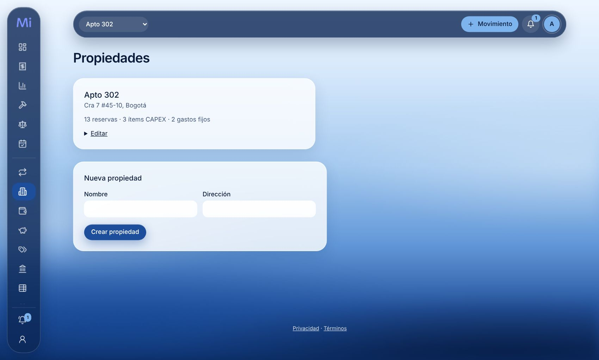
Lista de deseos
Anota compras que planeas, con tienda y precio estimado.
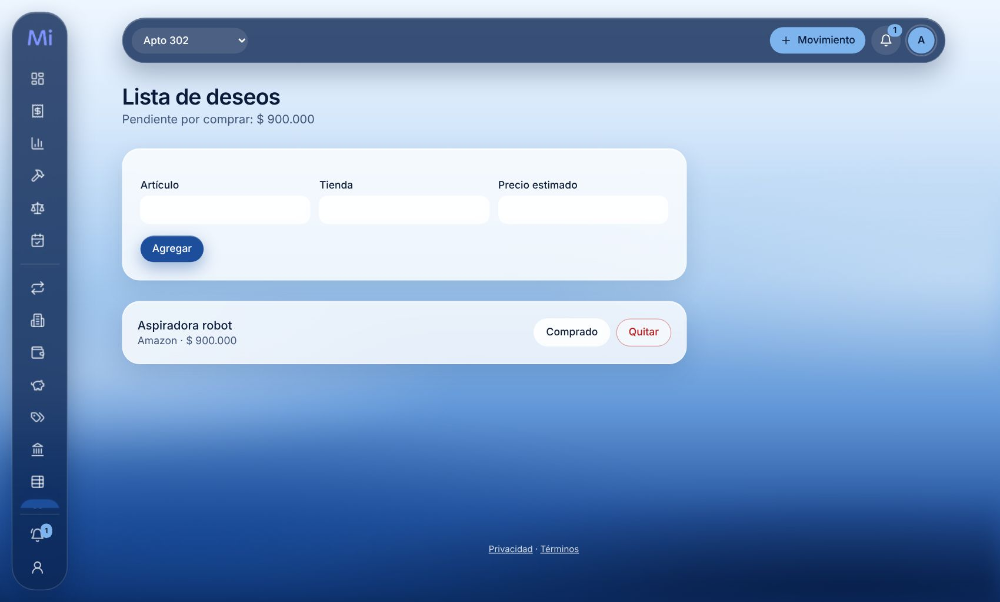
16. Miembros y acceso de solo lectura
Invitar a alguien con Google: Miembros → Invitar. Copia el enlace y envíaselo; solo sirve para el correo de Google invitado y vence en 7 días.
Dar acceso de solo lectura con usuario y contraseña (por ejemplo, a un familiar sin cuenta de Google): Miembros → Dar acceso de solo lectura. Escribe el nombre y elige un usuario; la app genera la contraseña y la muestra una sola vez. Cópiala y compártela por un canal privado.
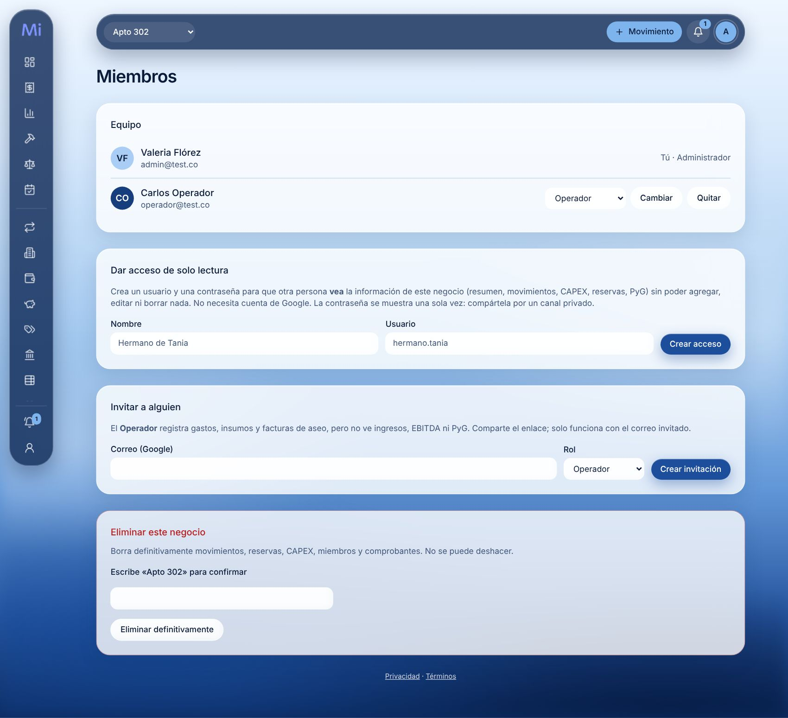
- Si la persona pierde la contraseña: Nueva contraseña.
- Para cortar el acceso: Quitar.
- Estas cuentas no pueden crear negocios propios.
En la misma pantalla puedes eliminar el negocio completo.
17. Uso en el celular y tema oscuro
La app se adapta al celular: barra inferior, botón + para registrar y la sección Más con el resto de pantallas.
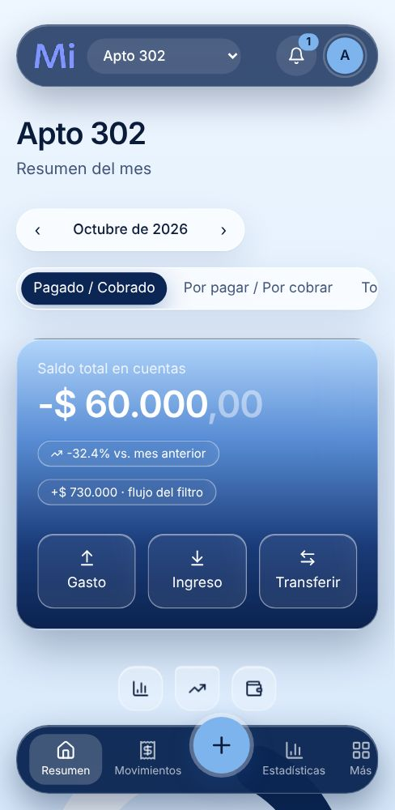
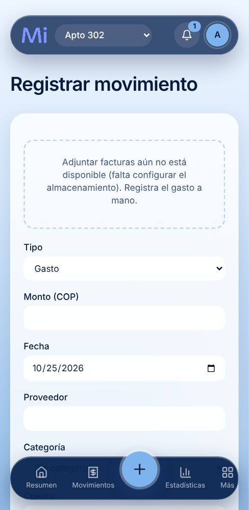
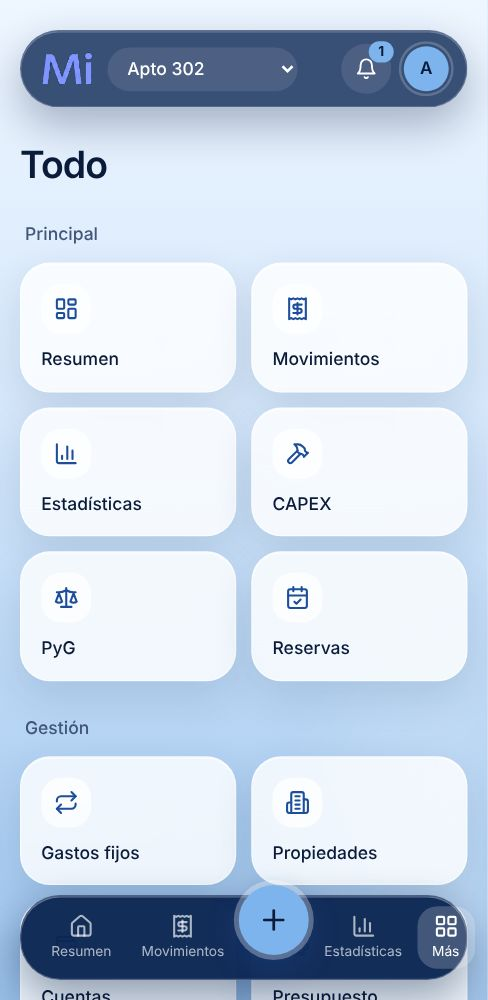
Desde el menú de tu avatar puedes cambiar entre tema claro y oscuro.
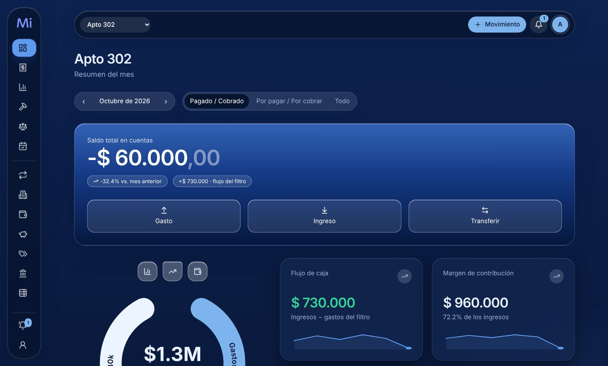
18. Preguntas frecuentes
- Me dice «No tienes permiso». Tu rol no permite esa acción; pídele al administrador.
- La invitación no funciona. Inicia sesión con el mismo correo al que se envió y verifica que no haya vencido.
- La lectura de la factura se equivocó. Corrige los campos a mano; son solo sugerencias.
- Subí un archivo y nada se guardó. En la carga en lote primero se revisa y luego se pulsa Guardar.
- Mis datos. Puedes eliminar un negocio en Miembros → Eliminar este negocio. Para eliminar tu cuenta: avatar → Mi cuenta y privacidad.
Soporte: <CORREO_DE_SOPORTE>